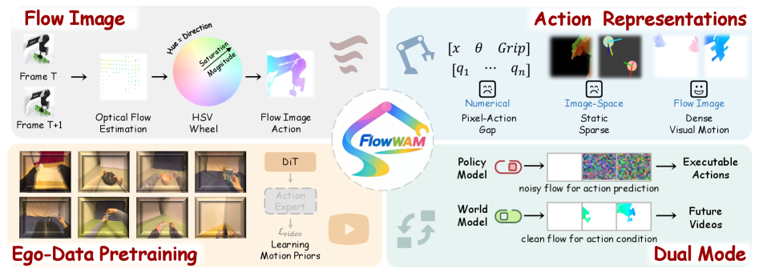

World Action ModelOptical FlowDual-Stream DiffusionWan2.2-TI2V-5BAction-Free Pretrain
제출: 2026년 7월 14일 (v1) · 백본 Wan2.2-TI2V-5B DiT · cs.RO / cs.CV
한 줄 요약 (TL;DR)
로봇 action을 HSV 색상 코딩된 optical flow 영상으로 재표현해 사전학습된 5B 영상 생성기(Wan2.2-TI2V)의 시각 prior를 그대로 재활용하는 World Action Model. RGB·flow 두 스트림을 한 DiT에서 공동 처리해 (i) policy 모드는 flow→action, (ii) world-model 모드는 flow→미래 RGB의 두 모드를 하나의 모델로 지원. RoboTwin 2.0 clean 92.94%, WorldArena EWMScore 63.71(trajectory accuracy +18.4% 상대 개선), 실기 평균 75.7%(π0.5 61.4, Motus 57.1).
1배경 · 문제의식
사전학습된 대규모 영상 생성기의 시각 prior를 로봇 정책·월드모델에 이식하는 흐름이 강해지고 있으나, action의 표현 형식이 사전학습 데이터와 불일치한다는 근본적 병목이 있다. 수치 action 시퀀스는 임베딩 형태로 삽입돼 RGB 토큰과 이질적이고, 별도 액션 헤드/어댑터를 요구해 사전학습 prior가 잘 전이되지 않는다. 반면 optical flow는 이미 RGB와 동일한 픽셀 격자·픽셀당 벡터로 표현 가능해, 사전학습 tokenizer와 정확히 같은 포맷으로 다룰 수 있다. 저자들은 flow를 정책과 월드모델을 연결하는 통합 action 표현으로 삼는다.
2핵심 Contribution
Flow-as-Action 통합 표현 — per-pixel 변위를 HSV(방향=Hue, 크기=Saturation, Value=1) 인코딩으로 RGB 형태 영상화. 사전학습 VAE·DiT를 재학습 없이 그대로 재사용.
Dual-Stream World Action Model — Wan2.2-TI2V-5B DiT의 트랜스포머 블록을 RGB·flow가 토큰 concat 방식으로 공유. patch embed와 출력 head만 스트림별로 분리해 파라미터 오버헤드 최소화.
Action-Free 사전학습 + Action-Labeled 미세조정 — 1단계 EgoDex(에고센트릭 인간 영상)에서 flow 시각 prior를 자기지도로 익히고, 2단계 RoboTwin에서 action expert가 flow latent를 실행 가능한 로봇 명령으로 decode.
Policy와 World Model의 대칭적 결합 — 같은 모델을 (i) flow 생성→action decode(policy) 또는 (ii) flow 조건부 RGB 예측(world model)로 스위치. Trajectory accuracy를 크게 끌어올려 WorldArena SOTA.
3Method
Flow-as-Image 인코딩
optical flow (u,v)를 HSV 이미지로 변환: H=atan2(v,u), S=‖(u,v)‖/max, V=1.0. 결과 flow 프레임은 형식적으로 RGB와 동일해 같은 VAE로 latent를 얻는다. 이로써 사전학습된 시각 encoder의 semantics를 flow 채널에도 그대로 상속.
Dual-Stream DiT (Wan2.2-TI2V-5B)
RGB latent 토큰과 flow latent 토큰을 sequence 축으로 concat해 공유 transformer block에 통과. patch embedding·최종 head만 스트림별로 분리. 노이즈 스케줄과 flow-matching 목적은 두 스트림 모두 표준 형식을 유지.
Motion-Aware Reweighting (Eq. 4)
매니퓰레이션 flow는 배경이 거의 정지된 sparse 신호이므로, 픽셀별 flow 크기를 기반으로 loss를 재가중해 정지 배경이 그라디언트를 지배하지 않도록 한다. 없으면 성공률 89.8→83.9로 하락.
Stochastic Latent Conditioning (Eq. 2)
추론 시 flow 조건이 denoising residual을 포함한 노이즈 있는 latent인 반면 학습은 clean latent만 사용해 train/inference gap 발생. 학습 중 50% step에서 σ∈[0,1] 노이즈를 시각 latent에 섞어 완화. 없으면 89.8→82.1.
두 가지 모드
Policy 모드
RGB latent(clean)→ flow latent 생성 → action expert로 로봇 명령 decode
World-Model 모드
flow latent(조건) + 텍스트 → 미래 RGB 프레임 생성 (액션 지도된 영상 예측)
Backbone
Wan2.2-TI2V-5B (5B 파라미터 DiT), VAE·transformer 대부분 재학습 최소
JEPA 유사도 97.14 · Subject 일관성 82.46 · 배경 89.97 · Depth 정확도 98.97 · 의미 정렬 89.93. Trajectory accuracy 기준 +18.4% 상대 개선.
실기 로봇 — 7태스크 평균 성공률
모델
단일팔 Franka(4)
양팔 ARX(3)
평균
Motus
—
—
57.1
π0.5
—
—
61.4
FlowWAM
—
—
75.7
양팔 태스크(수건 접기·그릇 쌓기·접시 정리)에서 π0.5 대비 +17.1pt 격차가 특히 크다.
5Ablation (주요 발견)
Policy 모드 (RoboTwin, 성공률): 수치 action만 69.8 → 원(u,v) flow 72.3 → motion 재가중 없음 83.9 → 확률적 latent 조건 없음 82.1 → Full FlowWAM 89.8. HSV flow 표현 자체가 큰 이득의 핵심.
World-Model 모드 (WorldArena EWMScore): 텍스트 49.31 → 수치 action 54.18 → 원(u,v) flow 56.72 → 이미지 마스크 57.84 → RGB flow 65.23. Flow 조건이 궤적 충실도를 결정적으로 끌어올린다.
Flow decodability = policy 품질의 예측지표: 예측 flow 오차와 정책 성공률의 Pearson 상관 r = −0.81. 성능 향상이 액션 헤드 지름길이 아닌 flow 예측 품질에서 온다는 강한 증거.
EgoDex 사전학습: 없으면 clean 82.4 vs 있음 92.9(+10.5pt). Action-free 인간 영상 사전학습이 flow 시각 prior 전이의 핵심.
6핵심 Figure / Table

Figure 1 — FlowWAM 통합 프레임워크. Optical flow가 로봇 action과 사전학습된 영상 prior 사이의 다리 역할을 하며, action-unlabeled 사전학습·policy 추론·world modeling 세 시나리오를 하나의 시스템 안에서 다룬다. (출처: arXiv:2607.13017)